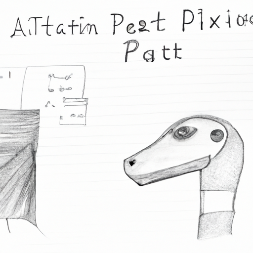

The future of Python and AI
Python is one of the most popular programming languages in the world and its usage is growing at an incredible rate. The language has become a staple in the tech industry, powering everything from web applications to robotics. As the language evolves, it is becoming more and more intertwined with Artificial Intelligence (AI) and Machine Learning (ML). AI and ML are two of the hottest topics in the tech world today, and Python is increasingly becoming the language of choice for developers who want to create applications and systems that leverage these powerful technologies.
In this blog post, we'll look at how Python is being used in AI and ML, and what the future of these technologies could look like. We'll also examine how Python can help developers create applications that leverage AI and ML in creative and innovative ways.
AI and ML are two of the most powerful and rapidly advancing technologies in the tech world today. AI is the process of making a computer system capable of performing tasks that normally require human intelligence, while ML is a form of AI that uses algorithms to learn and make decisions. Python is a great language for AI and ML because it is powerful, flexible, and easy to learn.
Python is used in many different areas of AI and ML. It is used for natural language processing, computer vision, and machine learning. Python is also used for data analysis, big data, and for building artificial neural networks. Python is a popular choice for developers because it is easy to learn and understand.
The future of AI and ML looks very promising. With the advancements in technology, we can expect to see more applications leveraging AI and ML to improve the user experience and automate tasks. Python will continue to be the language of choice for developers who want to create applications that leverage these powerful technologies. As Python continues to evolve, developers will have even more options for building applications that leverage AI and ML in creative and innovative ways.
Python is an incredible language and its usage is only going to continue to grow. By combining the power of Python with the advancements in AI and ML, developers will be able to create incredible applications that can revolutionize the way we interact with and use technology. The future of Python and AI looks very bright and I am excited to see what the future holds.